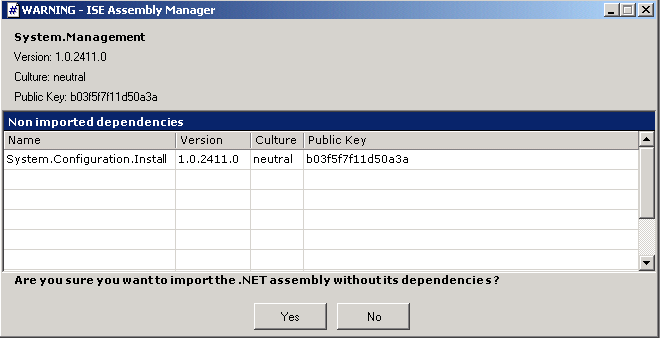

The import dialog
The import dialog enables you to import shared assemblies to the Eiffel assembly cache. It is very similar to the Eiffel generation dialog, but it provides some more options.
At the top of the dialog, the name, version, culture and public key of the assembly to import are repeated to avoid any misunderstanding.
Then you have to choose the folder where Eiffel classes corresponding to the selected assembly will be generated. Two possibilities:
- Check the box `default path' (which is checked by default) and the automatically-generated sources will be saved in the folder, whose filename is written in the disabled text field, that is "$ISE_EIFFEL\library.net\"

- Uncheck the option `default path' and browse for another folder by clicking on the `Browse' button or type it directly in the text field provided.
You must be aware that ISE Assembly Manager will automatically create a subfolder (with the same name as the selected assembly) in the folder you have specified.
Therefore you do not need to specify a path like "C:\my_assemblies\system" if you are currently importing the assembly `System.dll'. "C:\my_assemblies" is sufficient since a subfolder "System" will automatically be created. Otherwise the generated classes will be in the folder "C:\my_assemblies\system\system", which is certainly not the result you expected!
Two more options (comparing to the Eiffel generation dialog) are provided by the import dialog:
- In the same way the remove dialog enables you to remove the dependencies of the selected assembly, the import dialog gives you the opportunity to import the dependencies of the assembly you want to import. To do so, just check the option `import dependencies'. This option is selected by default.
In fact, if you want to use the imported assembly in an Eiffel # system, you may have some trouble if you miss the classes corresponding to the assembly dependencies. Therefore a warning appears in case you do not check the option and all dependencies are not imported yet:

Moreover, it does not take much longer to import the assembly with its dependencies.
-
The import dialog also asks you if you want to generate Eiffel classes with "Eiffel-friendly names", that is in lower case and underscores. This option is checked by default too. Nevertheless you can uncheck it if you want to keep the original external names.
At this point, you still have the possibility not to import the assembly by clicking on `Cancel'.
If you click on `OK', ISE Assembly Manager will launch the assembly importation. Since that may take a few minutes (up to twenty minutes for the assemblies, which have a lot of dependencies), a message box is displayed while importing the assembly and disappears when the importation is complete.